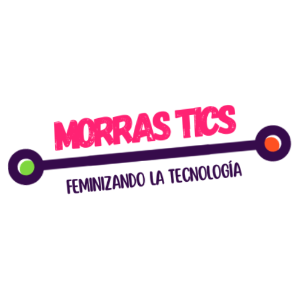

Morras TICsSi te apasiona la tecnología, la innovación y el trabajo en equipo, ¡el Club de Morras TICs es el lugar perfecto para ti! 🎉 Forma parte de una comunidad de mujeres entusiastas que buscan aprender, crecer y abrirse camino en el mundo tecnológico.
Envía tu solicitud al correo con toda la documentación requerida. Si tienes ganas de aprender y compartir, ¡te estamos esperando!
jinformatica@acatlan.unam.mxEncuentra más información en nuestras redes sociales y mantente al día con nuestras actividades y eventos exclusivos.
¡Sigue sus redes sociales y descubre más sobre su compromiso con la seguridad digital y el impulso a las mujeres en tecnología! ✨🚀